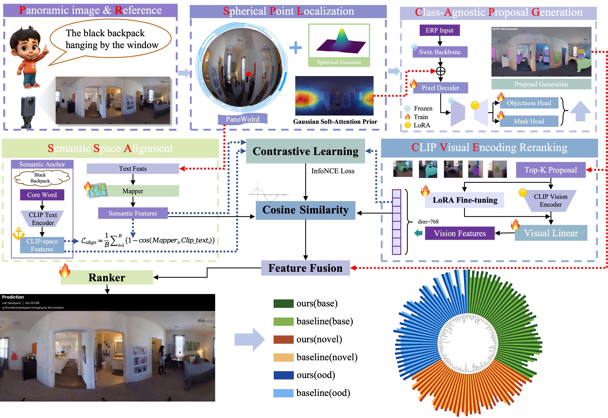
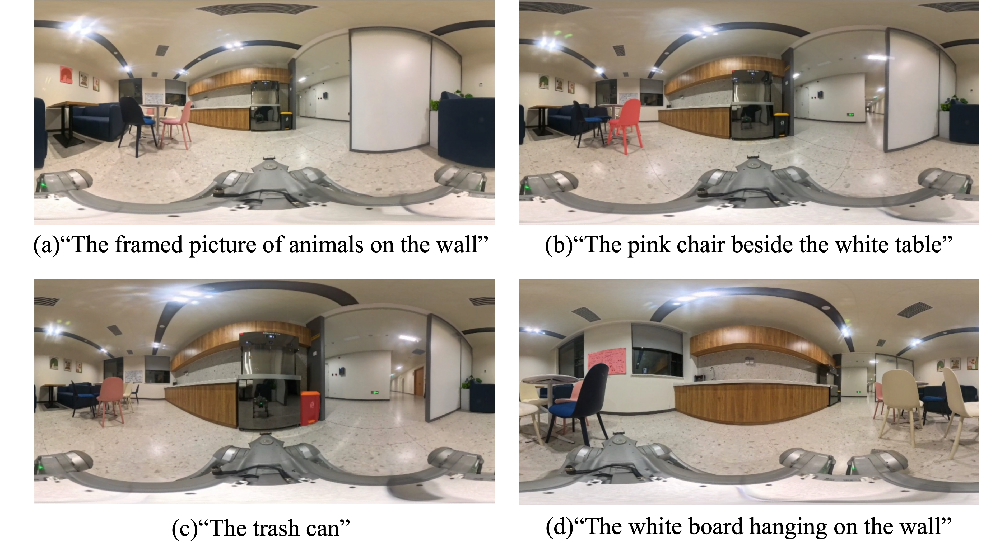

Abstract
Panoramic referring segmentation is a critical prerequisite for embodied agents to interact with human instructions. To truly achieve this, an ERP-native perception paradigm is an effective solution. We introduce OV-PanoReferSeg, a pixel-level benchmark designed for open-vocabulary panoramic referring segmentation. It contains over 11,000 referring instances, featuring a long-tail category distribution and challenging panoramic characteristics. Furthermore, we propose an ERP-native decoupled framework as a strong baseline. Extensive experiments demonstrate that our method outperforms zero-shot and fine-tuned baselines on the Novel and OOD splits, with the HB,N metric reaching 0.6305.
Real-World Demo
Deployment on a Unitree GO2 EDU quadruped robot equipped with a 360° panoramic camera.
Method

Overview of the proposed ERP-native decoupled framework.
OV-PanoReferSeg Benchmark
4,968
Panoramas
11,013
Instances
2,127
Vocabulary Size
50%+
Complex Spatial Desc.
Real-World Deployment
Qualitative results on small targets, multiple instances, normal references, and partial occlusion.
